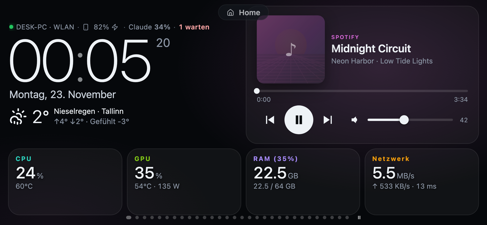

Open Source · kostenlos
PhoneBox
fürs iPhone
Mach dein altes iPhone zum Desk-Panel für deinen Computer.

📊 PC-Werte live
🤖 Claude & Codex Quotas
🎵 Musik steuern
🧩 129 Widgets
🔒 Ohne Account & Cloud
Code:
github.com/nexum-ceo/phonebox-ios
Selbst bauen mit Xcode · iOS-Port von PhoneBox (github.com/ersinkoc/phonebox), MIT